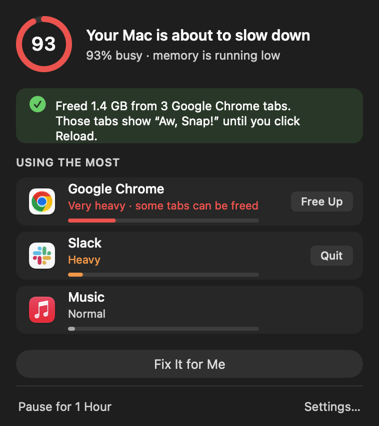

Stop waiting for the beachball.
Open Terminal (⌘ Space, type Terminal), paste this, press Return.
$ curl -fsSL https://trycue.github.io/install.sh | bash
Cue watches your Mac's memory, warns you before it slows down, tells you in plain words which app is the cause, and fixes it with one click.
$ curl -fsSL https://trycue.github.io/install.sh | bash

The problem
Every browser tab is its own process. Leave a few dozen open next to Slack and a video call, and your Mac quietly runs out of memory. By the time the beachball appears, it's too late.
Chrome, Edge, Brave and Arc run tabs as separate processes. Heavy web apps can take a gigabyte each.
When memory runs out, macOS starts writing it to disk. Everything feels sticky, fans spin, the Mac heats up.
macOS doesn't tell you until things freeze, and Activity Monitor isn't something most people want to read.
How it works
A tiny helper checks memory, swapping, CPU and heat every few seconds. The ring in your menu bar fills as your Mac gets busier.
Past the level you choose, Cue tells you what's wrong in plain words, like “Google Chrome is using the most memory.”
One click frees the heaviest background tabs or quits an app you've allowed. Or let Cue do it for you automatically.
Features
Cue frees memory without losing your work. It never touches the tab you're using, macOS itself, or anything you mark as off-limits.
Heavy background tabs stay in your tab bar. Click one and it reloads. Your busiest tab and extensions are never touched.
No graphs or jargon. Cue says which app is the problem and what will happen if you click.
Mac already frozen? Press ⌃⌥⌘F and Cue frees memory right away.
Optional auto-fix steps in once per slowdown, only for browser tabs and the apps you list as OK to quit.
The watcher runs as its own process with priority from macOS, and restarts by itself if anything goes wrong.
Everything runs on your Mac. Optional anonymous stats are off with one switch and never include names, files or websites.
Lightweight
FAQ
Cue is free and independent, so it isn't on the App Store. The install line downloads Cue, checks it matches the published checksum, puts it in Applications and starts it. No admin password, and nothing outside your own user account. You can read the script first at install.sh.
No. Freed tabs stay in your tab bar and show Chrome's “Aw, Snap!” page. Click Reload and they come back. Cue never frees the tab you're most likely using.
Cue can free tabs in Chrome, Edge, Brave, Arc, Vivaldi, Opera and Chromium. For any other app, like Slack or Teams, it tells you when it's heavy and can quit it for you. Apps still ask to save first.
If you leave “Share anonymous stats” on, once a day: a random install ID, your Mac model, memory size, macOS version, how often Cue warned and fixed, and the names of the heaviest apps. Never your name, files, websites or anything you type. Turn it off in Settings.
Macs with Apple silicon (M1 or newer) running macOS 13 Ventura or later.
Open Cue's Settings and click Uninstall Cue, or run curl -fsSL https://trycue.github.io/install.sh | bash -s -- --uninstall. Everything Cue added is removed, including its settings and caches.
Open Terminal (⌘ Space, type Terminal), paste this, press Return.
$ curl -fsSL https://trycue.github.io/install.sh | bash